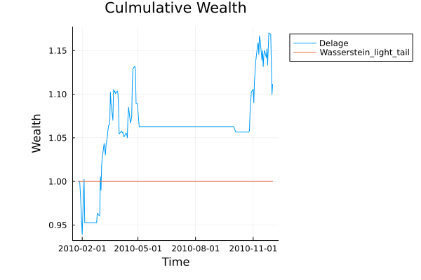

Distributionally Robust Portfolio Optimization
distributionally Robust Return as Objective Term
using HiGHS
using Clarabel
using Distributions
using PortfolioOpt
using PortfolioOpt.TestUtils
using MarketData # test data (loads the TimeSeries integration)Read Prices
prices = get_test_data();
numD, numA = size(prices) # A: Assets D: Days(316, 6)Calculating returns
returns_series = percentchange(prices);315×6 TimeSeries.TimeArray{Float64, 2, Dates.Date, Matrix{Float64}} 2009-09-02 to 2010-12-01
┌────────────┬──────────────┬──────────────┬─────────────┬─────────────┬────────
│ │ AAPL │ BA │ DELL │ CAT │ EBAY ⋯
├────────────┼──────────────┼──────────────┼─────────────┼─────────────┼────────
│ 2009-09-02 │ -0.000725953 │ -0.00758663 │ 0.00920447 │ -0.00752737 │ -0.0 ⋯
│ 2009-09-03 │ 0.00829398 │ 0.00123967 │ -0.00651466 │ 0.0351643 │ 0.00 ⋯
│ 2009-09-04 │ 0.0225758 │ 0.0142385 │ 0.0288525 │ 0.0237567 │ 0.0 ⋯
│ 2009-09-08 │ 0.0153837 │ 0.00712106 │ 0.0172084 │ 0.0186511 │ -0.0 ⋯
│ 2009-09-09 │ -0.010351 │ 0.0208081 │ -0.00250627 │ 0.0306579 │ 0.0 ⋯
│ 2009-09-10 │ 0.0082973 │ -0.000791609 │ 0.040201 │ 0.00578393 │ 0.0 ⋯
│ 2009-09-11 │ -0.00231803 │ 0.0170331 │ 0.00241546 │ -0.0032861 │ 0.00 ⋯
│ 2009-09-14 │ 0.00906134 │ -0.00740019 │ -0.0126506 │ 0.00494539 │ 0.0 ⋯
│ ⋮ │ ⋮ │ ⋮ │ ⋮ │ ⋮ │ ⋱
│ 2010-11-22 │ 0.0216151 │ 0.00691933 │ 0.00431655 │ 0.00035727 │ 0.0 ⋯
│ 2010-11-23 │ -0.0147753 │ -0.0067156 │ -0.0100287 │ -0.0163095 │ -0.0 ⋯
│ 2010-11-24 │ 0.0196612 │ 0.0284591 │ 0.00434153 │ 0.0249304 │ 0.0 ⋯
│ 2010-11-26 │ 0.000635324 │ -0.00932579 │ -0.0165706 │ -0.00661235 │ -0.00 ⋯
│ 2010-11-29 │ 0.00593651 │ -0.00679012 │ -0.00586081 │ -0.00546773 │ -0.0 ⋯
│ 2010-11-30 │ -0.0180516 │ -0.00916718 │ -0.0257922 │ 0.0111151 │ -0.0 ⋯
│ 2010-12-01 │ 0.0168729 │ 0.0305786 │ 0.0143722 │ 0.0336879 │ 0.00 ⋯
└────────────┴──────────────┴──────────────┴─────────────┴─────────────┴────────
2 columns and 300 rows omittedBacktest parameters
DEFAULT_SOLVER = optimizer_with_attributes(
HiGHS.Optimizer, "presolve" => "on", "time_limit" => 60.0, "log_to_console" => false
)
Clarabel_SOLVER = optimizer_with_attributes(
Clarabel.Optimizer, "verbose" => false, "max_iter" => 900000
)
date_range = timestamp(returns_series)[100:end];216-element Vector{Dates.Date}:
2010-01-26
2010-01-27
2010-01-28
2010-01-29
2010-02-01
2010-02-02
2010-02-03
2010-02-04
2010-02-05
2010-02-08
⋮
2010-11-18
2010-11-19
2010-11-22
2010-11-23
2010-11-24
2010-11-26
2010-11-29
2010-11-30
2010-12-01Backtest Delage's robust return
backtest_results = Dict()
backtest_results["Delage"], _ = sequential_backtest_market(
VolumeMarketHistory(returns_series), date_range
) do market, past_returns, ext
numD, numA = size(past_returns)
returns = values(past_returns)
k_back = 80
Σ, r̄ = mean_variance(returns[(end - k_back):end, :])
d = MvNormal(r̄, Σ)
formulation = PortfolioFormulation(
MAX_SENSE,
ObjectiveTerm(
ExpectedUtility(MomentUncertainty(d, 0.05, 1.3), PieceWiseUtility([1.0], [0.0]))
),
)
pointers = change_bids!(market, formulation, Clarabel_SOLVER)
return pointers
end(Dict{Symbol, StateRecorder}(:decisions => PortfolioOpt.DecisionRecorder{Float64}(2-dimensional DenseAxisArray{Float64,2,...} with index sets:
Dimension 1, [Dates.Date("2010-01-26"), Dates.Date("2010-01-27"), Dates.Date("2010-01-28"), Dates.Date("2010-01-29"), Dates.Date("2010-02-01"), Dates.Date("2010-02-02"), Dates.Date("2010-02-03"), Dates.Date("2010-02-04"), Dates.Date("2010-02-05"), Dates.Date("2010-02-08") … Dates.Date("2010-11-17"), Dates.Date("2010-11-18"), Dates.Date("2010-11-19"), Dates.Date("2010-11-22"), Dates.Date("2010-11-23"), Dates.Date("2010-11-24"), Dates.Date("2010-11-26"), Dates.Date("2010-11-29"), Dates.Date("2010-11-30"), Dates.Date("2010-12-01")]
Dimension 2, 1:6
And data, a 216×6 Matrix{Float64}:
1.129376254968756e-9 1.905713570632771e-9 … 2.3009885584652774e-8
4.021175588741749e-9 2.3255631262559908e-9 6.773467793393097e-8
4.7338001508052644e-7 1.2775619567743259e-6 0.9999942982331198
3.8832669545151505e-7 0.03878922420117988 0.9490879631132839
2.5261470657812715e-7 0.09698241442633776 0.8422653013824498
1.0119048781509799e-7 0.11870287802429429 … 0.8440405278626827
5.457632231597486e-8 0.09603261134693605 0.8876891061068383
3.521488969831141e-7 0.016061153457712495 0.9863983644462397
4.682119180774026e-10 8.121763081566428e-9 1.2476877533249431e-7
3.93348240491674e-10 2.1985565624142018e-9 8.012640711931256e-8
⋮ ⋱ ⋮
4.928956979387426e-7 7.63327685507209e-8 0.23326147742204026
2.3925566763152167e-6 3.113587563555187e-7 0.10312206966314529
5.698039263335028e-6 6.223091431175009e-7 0.17288424058561344
1.9732554514656975e-6 6.666153607569053e-7 … 0.09152593570869509
3.1310882732760786e-6 1.5260017145459328e-7 0.09077065356053103
6.3136849400220426e-6 2.293545531450411e-7 0.05532220026114679
3.1496141141486446e-6 3.955761973371894e-7 0.07930866314765865
0.045825645520558025 2.984470437791444e-8 0.12604051861389254
0.098674144357155 1.5952159872597533e-7 … 0.20183513662451472), :wealth => PortfolioOpt.WealthRecorder{Float64}(1-dimensional DenseAxisArray{Float64,1,...} with index sets:
Dimension 1, [Dates.Date("2010-01-26"), Dates.Date("2010-01-27"), Dates.Date("2010-01-28"), Dates.Date("2010-01-29"), Dates.Date("2010-02-01"), Dates.Date("2010-02-02"), Dates.Date("2010-02-03"), Dates.Date("2010-02-04"), Dates.Date("2010-02-05"), Dates.Date("2010-02-08") … Dates.Date("2010-11-18"), Dates.Date("2010-11-19"), Dates.Date("2010-11-22"), Dates.Date("2010-11-23"), Dates.Date("2010-11-24"), Dates.Date("2010-11-26"), Dates.Date("2010-11-29"), Dates.Date("2010-11-30"), Dates.Date("2010-12-01"), Dates.Date("2010-12-02")]
And data, a 217-element Vector{Float64}:
1.0
1.0000000003465421
1.0000000026367641
0.987878836808531
0.9392507458322517
0.9627670953436209
0.9837226162454428
1.0024623766374334
0.9527526639495423
0.9527526621810584
⋮
1.1501459764359987
1.1419220631170826
1.151946113326439
1.1332011215147522
1.1702230830274925
1.1686000024498462
1.1362314875463588
1.0996904861245163
1.1112309112506549), :returns => PortfolioOpt.ReturnsRecorder{Float64}(1-dimensional DenseAxisArray{Float64,1,...} with index sets:
Dimension 1, [Dates.Date("2010-01-26"), Dates.Date("2010-01-27"), Dates.Date("2010-01-28"), Dates.Date("2010-01-29"), Dates.Date("2010-02-01"), Dates.Date("2010-02-02"), Dates.Date("2010-02-03"), Dates.Date("2010-02-04"), Dates.Date("2010-02-05"), Dates.Date("2010-02-08") … Dates.Date("2010-11-17"), Dates.Date("2010-11-18"), Dates.Date("2010-11-19"), Dates.Date("2010-11-22"), Dates.Date("2010-11-23"), Dates.Date("2010-11-24"), Dates.Date("2010-11-26"), Dates.Date("2010-11-29"), Dates.Date("2010-11-30"), Dates.Date("2010-12-01")]
And data, a 216-element Vector{Float64}:
3.465420351890689e-10
2.290222096398064e-9
-0.012121165796272506
-0.04922475223113251
0.025037349840517698
0.021765929686600478
0.01904984198036883
-0.04958760931720231
-1.8561836234156354e-9
4.2286979964840016e-10
⋮
0.004520476807321795
-0.007150321339557103
0.008778226232002277
-0.016272455451546673
0.03267024785790281
-0.0013869839017764446
-0.0276985408485626
-0.03215982114767055
0.01049424840148332)), nothing)Backtest NingNing Du's Wasserstein robust return (under light tail assumption)
backtest_results["Wasserstein_light_tail"], _ = sequential_backtest_market(
VolumeMarketHistory(returns_series), date_range
) do market, past_returns, ext
numD, numA = size(past_returns)
returns = values(past_returns)
j_robust = 30
δ = 0.1
ϵ = log(1 / δ) / j_robust
d = DeterministicSamples(returns'[:, (end - j_robust):end])
s = DuWassersteinBall(d; ϵ=ϵ)
formulation = PortfolioFormulation(MAX_SENSE, ObjectiveTerm(ExpectedReturn(s)))
pointers = change_bids!(market, formulation, DEFAULT_SOLVER)
return pointers
end(Dict{Symbol, StateRecorder}(:decisions => PortfolioOpt.DecisionRecorder{Float64}(2-dimensional DenseAxisArray{Float64,2,...} with index sets:
Dimension 1, [Dates.Date("2010-01-26"), Dates.Date("2010-01-27"), Dates.Date("2010-01-28"), Dates.Date("2010-01-29"), Dates.Date("2010-02-01"), Dates.Date("2010-02-02"), Dates.Date("2010-02-03"), Dates.Date("2010-02-04"), Dates.Date("2010-02-05"), Dates.Date("2010-02-08") … Dates.Date("2010-11-17"), Dates.Date("2010-11-18"), Dates.Date("2010-11-19"), Dates.Date("2010-11-22"), Dates.Date("2010-11-23"), Dates.Date("2010-11-24"), Dates.Date("2010-11-26"), Dates.Date("2010-11-29"), Dates.Date("2010-11-30"), Dates.Date("2010-12-01")]
Dimension 2, 1:6
And data, a 216×6 Matrix{Float64}:
0.0 -0.0 -0.0 -0.0 -0.0 -0.0
-0.0 -0.0 -0.0 -0.0 -0.0 -0.0
0.0 -0.0 0.0 -0.0 -0.0 -0.0
-0.0 -0.0 -0.0 -0.0 -0.0 -0.0
-0.0 -0.0 -0.0 0.0 0.0 -0.0
-0.0 0.0 -0.0 0.0 -0.0 -0.0
-0.0 -0.0 0.0 -0.0 -0.0 -0.0
-0.0 -0.0 -0.0 0.0 -0.0 -0.0
-0.0 -0.0 -0.0 -0.0 0.0 -0.0
-0.0 -0.0 -0.0 -0.0 0.0 -0.0
⋮ ⋮
-0.0 -0.0 0.0 -0.0 -0.0 -0.0
-0.0 -0.0 -0.0 0.0 -0.0 -0.0
-0.0 -0.0 0.0 -0.0 -0.0 -0.0
-0.0 -0.0 -0.0 -0.0 -0.0 -0.0
-0.0 -0.0 -0.0 -0.0 -0.0 -0.0
0.0 -0.0 0.0 -0.0 -0.0 -0.0
0.0 0.0 -0.0 -0.0 -0.0 -0.0
-0.0 -0.0 -0.0 0.0 -0.0 -0.0
0.0 -0.0 -0.0 -0.0 -0.0 -0.0), :wealth => PortfolioOpt.WealthRecorder{Float64}(1-dimensional DenseAxisArray{Float64,1,...} with index sets:
Dimension 1, [Dates.Date("2010-01-26"), Dates.Date("2010-01-27"), Dates.Date("2010-01-28"), Dates.Date("2010-01-29"), Dates.Date("2010-02-01"), Dates.Date("2010-02-02"), Dates.Date("2010-02-03"), Dates.Date("2010-02-04"), Dates.Date("2010-02-05"), Dates.Date("2010-02-08") … Dates.Date("2010-11-18"), Dates.Date("2010-11-19"), Dates.Date("2010-11-22"), Dates.Date("2010-11-23"), Dates.Date("2010-11-24"), Dates.Date("2010-11-26"), Dates.Date("2010-11-29"), Dates.Date("2010-11-30"), Dates.Date("2010-12-01"), Dates.Date("2010-12-02")]
And data, a 217-element Vector{Float64}:
1.0
1.0
1.0
1.0
1.0
1.0
1.0
1.0
1.0
1.0
⋮
1.0
1.0
1.0
1.0
1.0
1.0
1.0
1.0
1.0), :returns => PortfolioOpt.ReturnsRecorder{Float64}(1-dimensional DenseAxisArray{Float64,1,...} with index sets:
Dimension 1, [Dates.Date("2010-01-26"), Dates.Date("2010-01-27"), Dates.Date("2010-01-28"), Dates.Date("2010-01-29"), Dates.Date("2010-02-01"), Dates.Date("2010-02-02"), Dates.Date("2010-02-03"), Dates.Date("2010-02-04"), Dates.Date("2010-02-05"), Dates.Date("2010-02-08") … Dates.Date("2010-11-17"), Dates.Date("2010-11-18"), Dates.Date("2010-11-19"), Dates.Date("2010-11-22"), Dates.Date("2010-11-23"), Dates.Date("2010-11-24"), Dates.Date("2010-11-26"), Dates.Date("2010-11-29"), Dates.Date("2010-11-30"), Dates.Date("2010-12-01")]
And data, a 216-element Vector{Float64}:
0.0
0.0
0.0
0.0
0.0
0.0
0.0
0.0
0.0
0.0
⋮
0.0
0.0
0.0
0.0
0.0
0.0
0.0
0.0
0.0)), nothing)Plot
using Plots
using Plots.PlotMeasures
plt = plot(;
title="Culmulative Wealth",
xlabel="Time",
ylabel="Wealth",
legend=:outertopright,
left_margin=10mm,
);
for (strategy_name, recorders) in backtest_results
plot!(
plt,
axes(get_records(recorders[:wealth]), 1),
get_records(recorders[:wealth]).data;
label=strategy_name,
)
end
plt
This page was generated using Literate.jl.